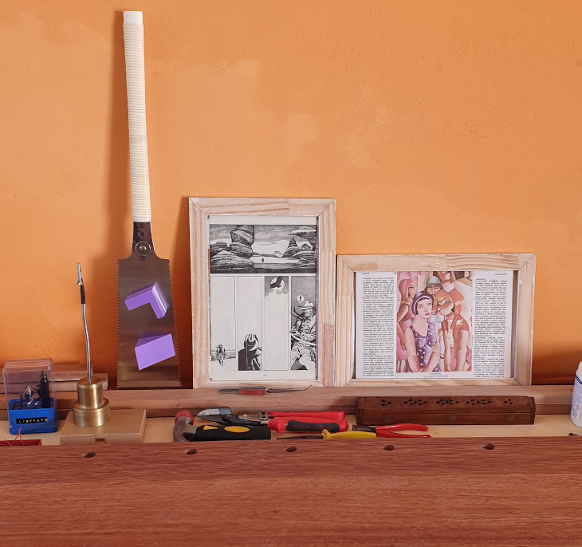

Sawing Guides

The idea here is the same as my dovetail jig but now one is inteded to aid making square cuts on wood with hand saws and the other 45 degrees cut for joinery.
I put the option of having a recess on this two jigs for clearance between the saw and the jig itself. I realized that depending on how you execute the cut the saw may bite the jig. It doesn’t alter the performance of the jig, but it leaves scratch marks. Cutting a recess on the dovetail jig makes it unbalanced but this two not, at least in my opinion.
import cadquery as cq
# A simple woodworking jig for guiding a saw at right angles.
size = 50.0 # mm, size of the blank
width = 35.0 # mm
tab_top = 18.0 # mm, thickness of the top tab
tab_back = 12.0 # mm, thickness of the back tab
magnet_diameter = 5.2 # mm
magnet_thickness = 8.5 # mm
magnet_spacing_between = 30.0 # mm
clearance = True
clearance_size = 2.0 # mm
right_angle_guide = cq.Workplane("top").box(width, size, size).\
faces(">X").workplane().pushPoints([(-magnet_spacing_between/2, size/2-tab_top/2), (magnet_spacing_between/2, size/2-tab_top/2)]).hole(magnet_diameter, magnet_thickness) .\
faces(">Y").workplane().transformed(offset=(0, -tab_top, 0)).rect(size, size).cutBlind(-size+tab_back)
if clearance:
right_angle_guide = right_angle_guide.faces(">X").workplane(centerOption='CenterOfBoundBox').move(0, -tab_top).rect(size, size).cutBlind(-clearance_size)
show_object(right_angle_guide)
import cadquery as cq
# A simple 45 degrees hand saw guide for woodworking
size = 40.0 # mm, height and lenght and of the guide. The width is double this value
tab_top = 18.0 # mm, thickness of the top tab
tab_back = 12.0 # mm, thickness of the back tab
magnet_diameter = 5.2 # mm
magnet_thickness = 8.5 # mm
magnet_spacing_between = 30.0 # mm
clearance = True
clearance_size = 2.0 # mm
guide = cq.Workplane("front").lineTo(size*2, 0).lineTo(size, size).close().extrude(size) .\
faces(">X").workplane().pushPoints([(-magnet_spacing_between/2, size/2-tab_top/2), (magnet_spacing_between/2, size/2-tab_top/2)]).hole(magnet_diameter, magnet_thickness) .\
faces("<Y").workplane().transformed(offset=(0, -tab_top, -tab_back)).rect(size*2, size).cutBlind(-size)
if clearance:
guide = guide.faces('>(1,1,0)').workplane(centerOption='CenterOfBoundBox').move(0, -tab_top).rect(size*1.6, size).cutBlind(-clearance_size)
show_object(guide)
Recently I got myself a Gyokucho 615 and I could test it with the jig. No need to say it works like a charm. The cut was square and the texture of the end grain after the cut was very smooth. What a saw, btw! I managed to make a few frames with this setup.

Even though the jigs are simple designs, I think it is a good example of how cool cadquery is. A few lines of human readable code and you have an useful parametric model ready for 3d printing or cnc machining. Iterate the design is fast and easy.
Thanks for looking
Edi